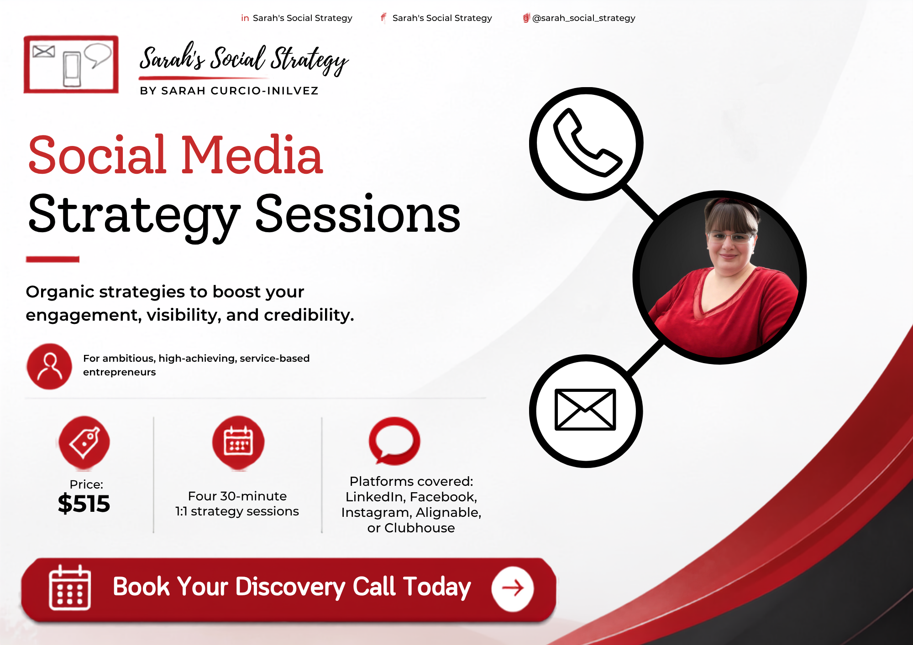
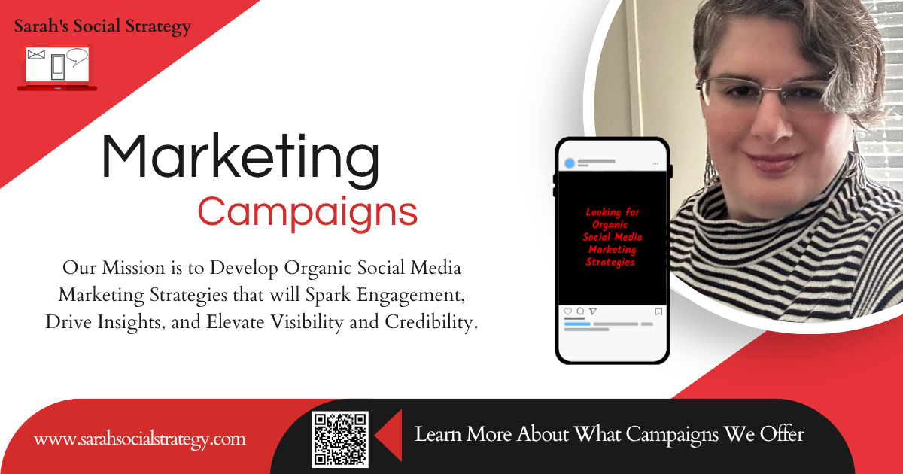
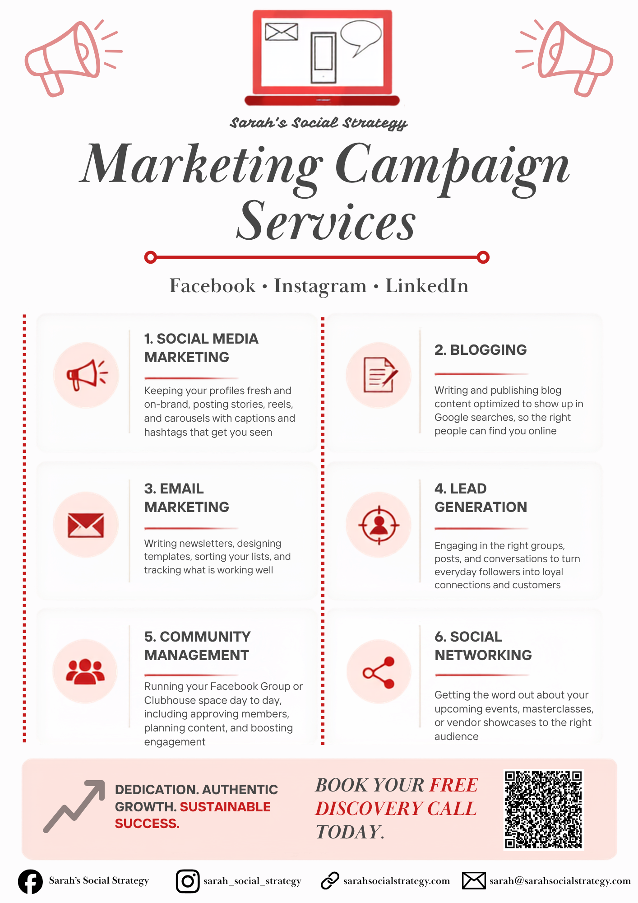

Sarah’s Social Strategy
Marketing Communications Intern · June 2026 – November 2026
As a Marketing Communications Intern with Sarah’s Social Strategy, I gained hands-on experience in social media and marketing while learning what goes on behind the scenes of building a strong digital presence. My work spanned written blogs, design, and social content.
Blogs
-
Meet Sabrina Navarro: Digital Marketing
My passion for storytelling and communication sparked my interest in digital marketing, where I can use creative strategies to connect with diverse audiences and build communities.
- 1,240 Reads
- 3:10 Avg. time
- 86 Shares +38%
-
Beyond the Feed: Building a Stronger Social Media Strategy
Social media can feel like a lot to keep up with, especially with new trends, changing algorithms, endless content ideas, and the pressure to always be posting. But ultimately, social media is about something much simpler: connecting with people. It’s important to look beyond the feed, and with a strong social media strategy, entrepreneurs can build a community, share their story, and create meaningful relationships with the people behind the screen.
-
Building a Micro-Community on Facebook: Is It Worth It?
Building a community on Facebook is, in many ways, the purpose of the app. But in a world where brands are constantly trying to reach bigger audiences, is there still value in keeping things small?
Social Carousel
“5 Community Management Tips That Actually Work” — an Instagram carousel I wrote and designed. Swipe or use the arrows to move through it.


- 12.4k Impressions +38%
- 7.9% Engagement rate
- 312 Saves Instagram Insights
Flyers
Print and social flyers designed for the agency. Select any flyer to view it full size.






- 2.1k Reach
- 148 Link clicks
- 19 Inquiries +24%